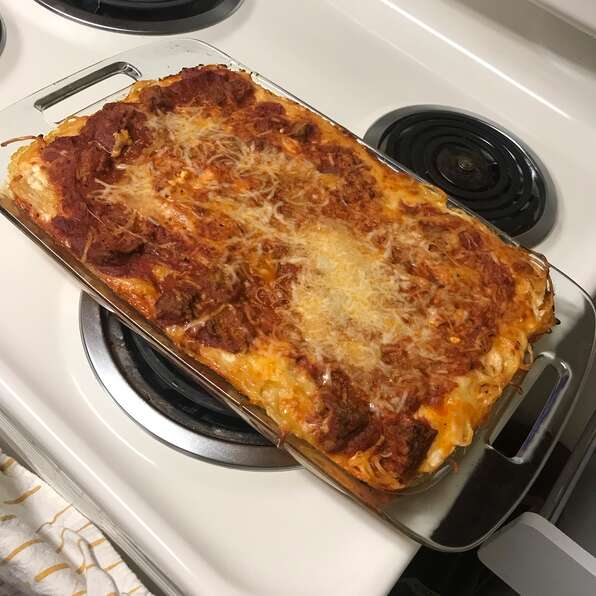

Baked Spaghetti

Description
A comforting baked spaghetti casserole with plenty of melted cheese is the perfect dish for potlucks, family gatherings, or a week-night dinner.
Ingredients
- 1 (16 ounce) package spaghetti
- 1 pound ground beef
- 1 onion, chopped
- 1 (32 ounce) jar meatless spaghetti sauce
- ½ teaspoon seasoned salt
- 2 eggs
- ⅓ cup grated Parmesan cheese
- 5 tablespoons butter, melted
- 2 cups small curd cottage cheese, divided
- 5 cups shredded mozzarella cheese, divided
Steps
- Preheat the oven to 350 degrees F (175 degrees C). Lightly grease a 9x13-inch baking dish.
- Bring a large pot of lightly salted water to a boil. Cook spaghetti in boiling water, stirring occasionally until cooked through but firm to the bite, about 12 minutes. Drain.
- Heat a large skillet over medium heat; cook and stir beef and onion until meat is browned and onion is soft and translucent, about 7 minutes. Drain. Stir in spaghetti sauce and seasoned salt.
- Whisk eggs, Parmesan, and butter in a large bowl. Add spaghetti and toss to coat.
- Place 1/2 of the spaghetti mixture in the prepared dish. Top with 1/2 of the cottage cheese, 2 cups mozzarella, and 1/2 of the meat sauce. Repeat layers. Cover with aluminum foil.
- Bake in preheated oven for 40 minutes. Remove foil and sprinkle with the remaining mozzarella. Continue to bake until the cheese is melted and lightly browned, 20 to 25 minutes longer.
Return to Home Page